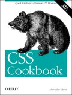

|  |
| About IR |
| Editors |
| Author instructions |
| Copyright |
| Author index |
| Subject index |
| Search |
| Reviews |
| Register |
| Home |
Schmitt, Christopher. CSS cookbook. Sebastopol, CA: O'Reilly, 2004. xvi, 353, [4] p. ISBN 0-596-00576-8 $34.95 £24.95
Information Research uses style sheets for the papers and for the reviews, so you can see the effect them as you look at this page. The fount styles for the headings, as well as for the standard paragraphs and the 'How to cite' section at the end of the review, are all the result of 'styles'. I use them in a very elementary fashion, since the journal needs little else, and I also take advantage of the fact that, although the styles 'cascade' through a document, being applied to every appropriate element, that cascading is stopped at any time by making another style part of a tag. So, in the 'How to cite' section, the colour of the fount is set by a style statement in the <p> (paragraph) tag, thus: <p style="text-align : center; color : Red; font-weight : bold;">, thereby over-ruling the instruction in the style sheet.
Schmitt's 'cookbook' is about much more sophisticated matters. Just about every aspect imaginable of the use of Cascading Style Sheets is dealt with in its ten chapters: Web Typography; Page Elements (such as borders); Links and Navigation; Lists (for example, using custom images for item markers); Forms; Tables; Page Layouts; Print (setting styles for printing Web pages); Hacks and Workarounds (for example, fixing problems with certain browsers); and Designing with CSS.
Here's an example of one little fix: the default line height may be thought too narrow and, certainly, if one uses superscript symbols for notes, like this1, it can result in a line with such a marker having a different line height—as here.
To prevent this, we can simply change the line height for all paragraphs, although it is done, here, only with this one. Here's the note marker again,1, but the line height has been changed to 1.5 em, so it does not cause problems and the distance between the lines remains the same.
Another neat little trick is shown in all of the paragraphs of this review—the first line of each paragraph is shown in bold; not, perhaps, suitable for this kind of publication but one could imagine circumstances in which it might be useful, for example, in producing a two-column newsletter.
There are many more tricks you can play with CSS and all of them are fully documented, with illustrations, so that you can tell what is likely to be of use to you. This is not a book for everyone, but anyone who has responsibility for designing Web pages of any kind will find it useful.
Professor Tom Wilson
Editor-in-Chief
December, 2004
How to cite this review
Wilson, T.D. (2005). Review of: Schmitt, Christopher. CSS cookbook. Sebastopol, CA: O'Reilly, 2004. Information Research, 10(2), review no. R158 [Available at: http://informationr.net/ir/reviews/revs158.html]